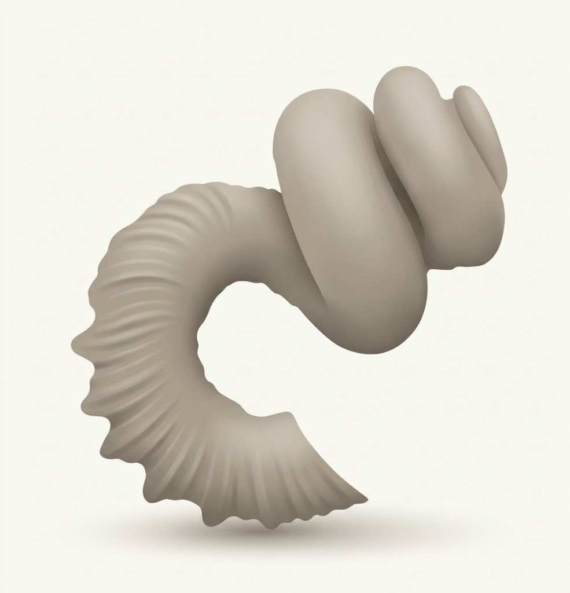
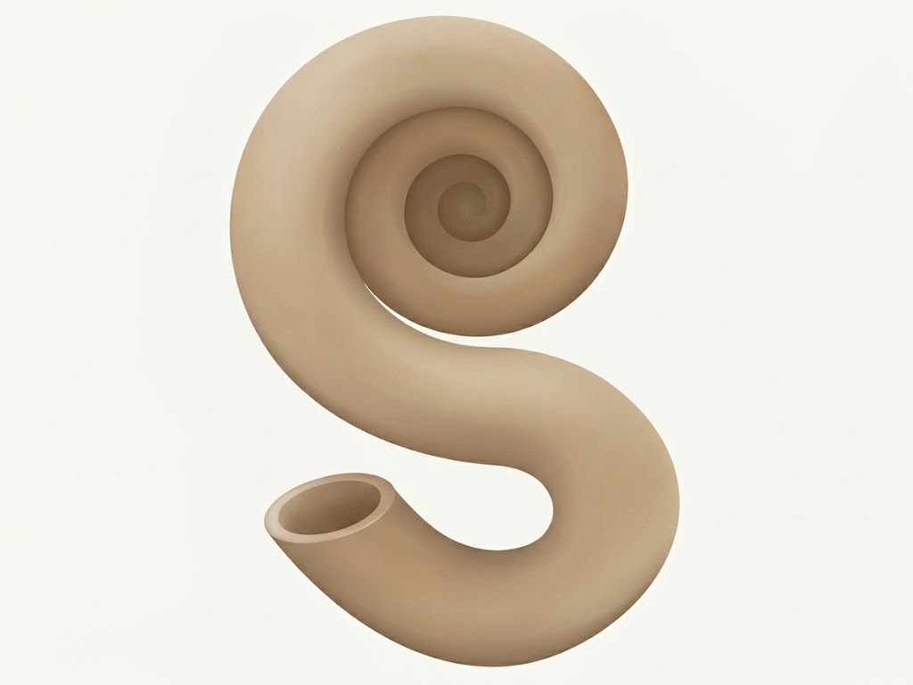

プラビトセラスの進化を追う
不思議な巻き方をする異常巻きアンモナイト。 その殻を比べると、進化のつながりが見えてきます！
アンモナイトといえば、平面状にぐるぐると巻いた殻を イメージする方が多いのではないでしょうか？
でも、実はアンモナイトの中には、びっくりするほど 変わった巻き方をするものもいます。今回は、日本で産出する 異常巻きアンモナイトの中でも特に個性的な、 プラビトセラスとディディモセラスに注目してみましょう！
まずは、2つの巻き方を見てみよう！
ディディモセラス
ディディモセラスは、和泉層群を代表する異常巻き アンモナイトのひとつです。
成長の初めから中ごろにかけては、巻貝のように塔状に 巻いていきます。そして、成長の後期になると巻き方が反転し、 U字状へと変化します。
面白いのは、その巻き方にかなり個体差があること！ 塔が高いものもあれば低いものもあり、巻きの方向も 右巻きと左巻きの両方が見られます。

プラビトセラス
一方、プラビトセラスは、S字状に巻いた殻をもつ、 とても個性的なアンモナイトです。
成長の初めの2〜3巻きは塔状に巻き、その後は同じ平面上に 巻いていきます。さらに成長の後期になると、それまでの巻きから 離れ、逆方向へと巻き進みます。
こうして、あの独特なS字状の殻ができあがるのです！

2つのアンモナイトから進化を探る！
ディディモセラスはU字状、プラビトセラスはS字状。 完成した殻の形は大きく違いますが、実はこの2つには 進化のつながりがあると考えられています。
研究によると、プラビトセラスはディディモセラスの仲間から 進化したと考えられています。
どちらも成長の初めは塔状に巻いているのがポイントです。 成長に伴う巻き方の変化を比べることで、異なる形の殻が どのように生まれたのか、その進化の道筋を探ることができます。
最初は似たような巻き方だったのに、進化の過程で独特な S字型へと変化していったと考えると、なんだか面白いですよね！
化石の形を比べることで、遠い昔の生き物たちの進化を たどることができるのです。
※本来は化石の写真も載せたかったのですが、著作権の都合で 掲載できませんでした……ごめんちょ！ 今回はイメージでお楽しみください。